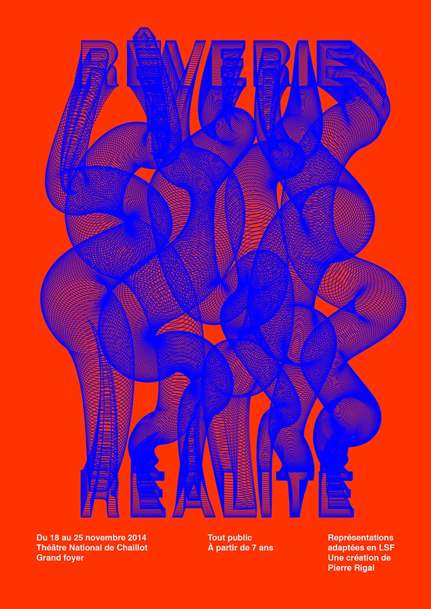
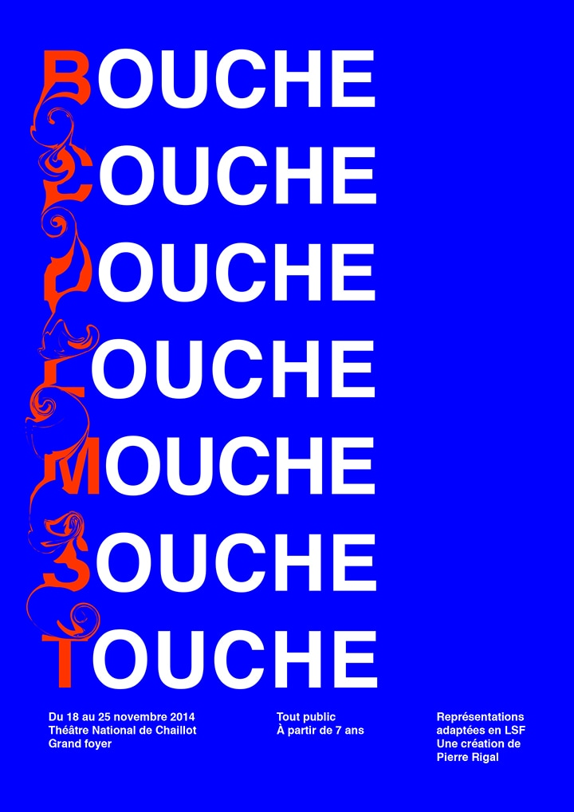
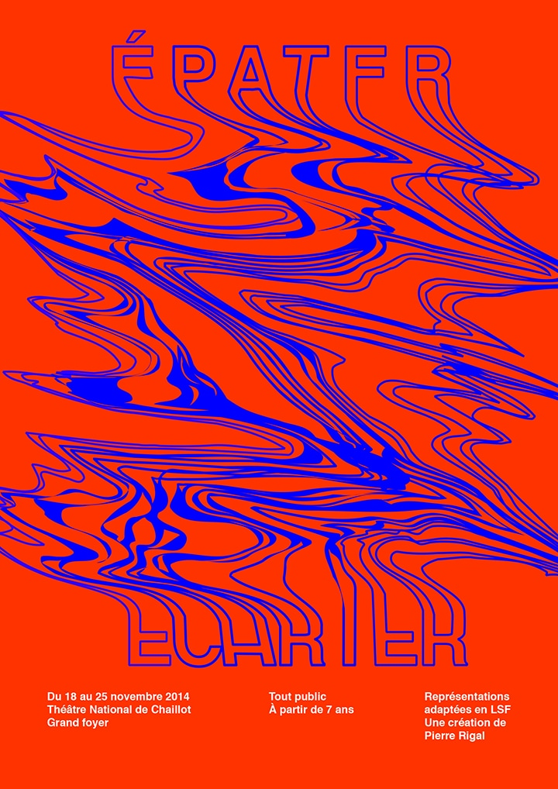
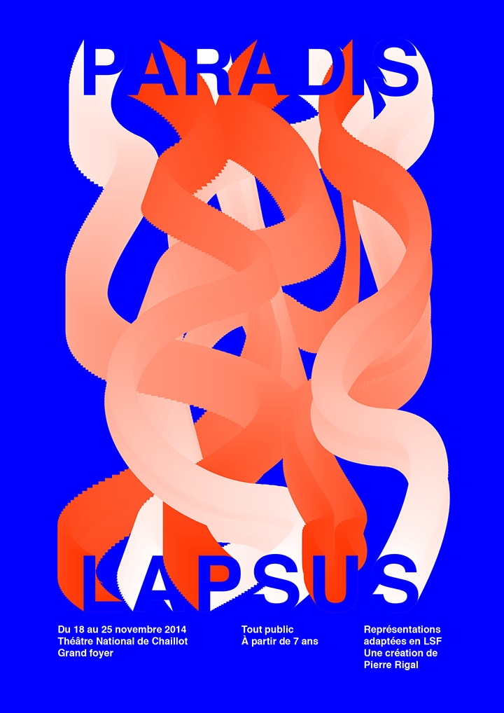
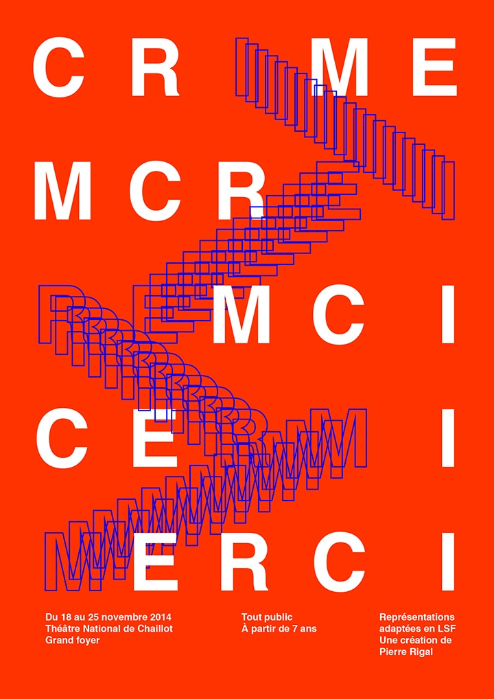
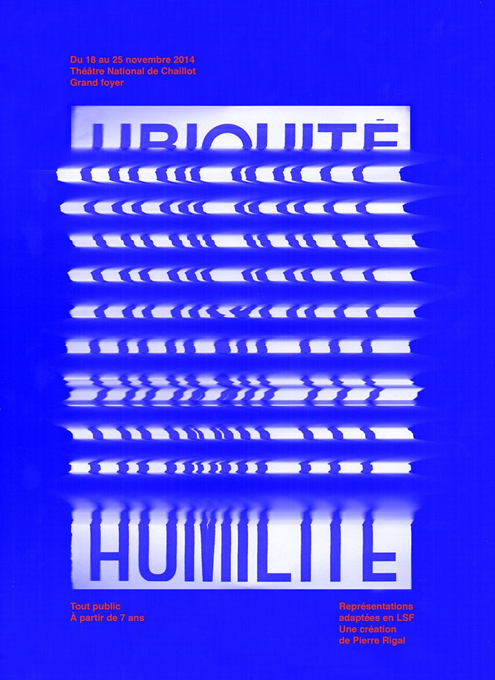

Lapsus — 2016
Campagne
Identité
Le lapsus correspond au fait d'exprimer quelque chose en décalage avec
l'intention première. Je me suis inspiré de cette notion de transformations
cocaces des mots pour créer des visuels, dans le but de promouvoir fictivement
la pièce de théâtre "Paradis Lapsus", chorégraphiée par Pierre Rigal.
Le numérique, la photocopie et d'autres techniques ont permis la mise en forme
de ces quiproquos à travers la typographie principalement.





